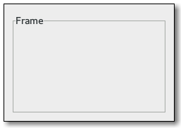

Gtk.Frame
Example
| Subclasses: | Gtk.AspectFrame |
|---|
Methods
| Inherited: | Gtk.Bin (1), Gtk.Container (27), Gtk.Widget (256), GObject.Object (33), Gtk.Buildable (10) |
|---|
| static | new(label) |
| get_label() | |
| get_label_align() | |
| get_label_widget() | |
| get_shadow_type() | |
| set_label(label) | |
| set_label_align(xalign, yalign) | |
| set_label_widget(label_widget) | |
| set_shadow_type(type) |
Virtual Methods
| Inherited: | Gtk.Container (10), Gtk.Widget (82), GObject.Object (7), Gtk.Buildable (10) |
|---|
| do_compute_child_allocation(allocation) |
Properties
| Inherited: | Gtk.Container (3), Gtk.Widget (38) |
|---|
| Name | Type | Flags | Short Description |
|---|---|---|---|
| label | str | r/w | Text of the frame’s label |
| label-widget | Gtk.Widget | r/w | A widget to display in place of the usual frame label |
| label-xalign | float | r/w | The horizontal alignment of the label |
| label-yalign | float | r/w | The vertical alignment of the label |
| shadow-type | Gtk.ShadowType | r/w | Appearance of the frame border |
Style Properties
| Inherited: | Gtk.Widget (17) |
|---|
Signals
| Inherited: | Gtk.Container (4), Gtk.Widget (69), GObject.Object (1) |
|---|
Fields
| Inherited: | Gtk.Bin (1), Gtk.Container (1), Gtk.Widget (1), GObject.InitiallyUnowned (3), GObject.Object (3) |
|---|
| Name | Type | Access | Description |
|---|---|---|---|
| bin | Gtk.Bin | r |
Class Details
- class Gtk.Frame(**kwargs)
Bases: Gtk.Bin
The frame widget is a Bin that surrounds its child with a decorative frame and an optional label. If present, the label is drawn in a gap in the top side of the frame. The position of the label can be controlled with Gtk.Frame.set_label_align ().
# Gtk.Frame as Gtk.Buildable
The Gtk.Frame implementation of the Gtk.Buildable interface supports placing a child in the label position by specifying “label” as the “type” attribute of a element. A normal content child can be specified without specifying a type attribute.
An example of a UI definition fragment with Gtk.Frame:
<object class="GtkFrame"> <child type="label"> <object class="GtkLabel" id="frame-label"/> </child> <child> <object class="GtkEntry" id="frame-content"/> </child> </object>
- static new(label)
Parameters: label (str or None) – the text to use as the label of the frame Returns: a new Gtk.Frame widget Return type: Gtk.Widget Creates a new Gtk.Frame, with optional label label. If label is None, the label is omitted.
- get_label()
Returns: the text in the label, or None if there was no label widget or the lable widget was not a Gtk.Label. This string is owned by GTK+ and must not be modified or freed. Return type: str If the frame’s label widget is a Gtk.Label, returns the text in the label widget. (The frame will have a Gtk.Label for the label widget if a non-None argument was passed to Gtk.Frame.new ().)
- get_label_align()
Returns: xalign: location to store X alignment of frame’s label, or None yalign: location to store X alignment of frame’s label, or None Return type: (xalign: float, yalign: float) Retrieves the X and Y alignment of the frame’s label. See Gtk.Frame.set_label_align ().
- get_label_widget()
Returns: the label widget, or None if there is none. Return type: Gtk.Widget or None Retrieves the label widget for the frame. See Gtk.Frame.set_label_widget ().
- get_shadow_type()
Returns: the current shadow type of the frame. Return type: Gtk.ShadowType Retrieves the shadow type of the frame. See Gtk.Frame.set_shadow_type ().
- set_label(label)
Parameters: label (str or None) – the text to use as the label of the frame Sets the text of the label. If label is None, the current label is removed.
- set_label_align(xalign, yalign)
Parameters: - xalign (float) – The position of the label along the top edge of the widget. A value of 0.0 represents left alignment; 1.0 represents right alignment.
- yalign (float) – The y alignment of the label. A value of 0.0 aligns under the frame; 1.0 aligns above the frame. If the values are exactly 0.0 or 1.0 the gap in the frame won’t be painted because the label will be completely above or below the frame.
Sets the alignment of the frame widget’s label. The default values for a newly created frame are 0.0 and 0.5.
- set_label_widget(label_widget)
Parameters: label_widget (Gtk.Widget or None) – the new label widget Sets the label widget for the frame. This is the widget that will appear embedded in the top edge of the frame as a title.
- set_shadow_type(type)
Parameters: type (Gtk.ShadowType) – the new Gtk.ShadowType Sets the shadow type for frame.
- do_compute_child_allocation(allocation)
Type: virtual Parameters: allocation (cairo.RectangleInt) –
Property Details
- Gtk.Frame.props.label_widget
Name: label-widget Type: Gtk.Widget Default Value: None Flags: r/w A widget to display in place of the usual frame label
- Gtk.Frame.props.label_xalign
Name: label-xalign Type: float Default Value: 0.0 Flags: r/w The horizontal alignment of the label
- Gtk.Frame.props.label_yalign
Name: label-yalign Type: float Default Value: 0.5 Flags: r/w The vertical alignment of the label
- Gtk.Frame.props.shadow_type
Name: shadow-type Type: Gtk.ShadowType Default Value: Gtk.ShadowType.ETCHED_IN Flags: r/w Appearance of the frame border